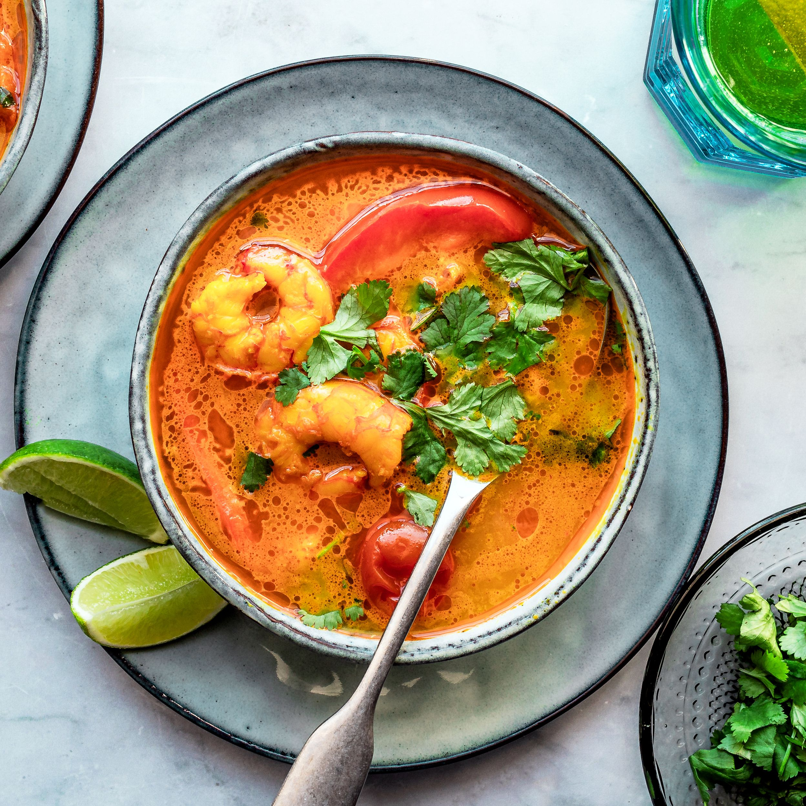

Tom Yum

Easy Tom Yum
Alright, this is a little different than the other recipes. This is a soup that always brings me back
to the time I spent living at a Muay Thai training camp in Phuket, Thailand. It has a delicious
mixture of sour and spicy and never fails to leave me feeling satiated for hours to come. The version here
is a quick and cheap fix if you want to throw together your own simple Tom Yum at home, more
traditional and whole recipes can have quite a bit of a learning curve to them. So if you want a simple home made
Tom Yum, lets do it.
Tom Yum Ingredients:
- Rice noodles of any quantity your heart desires
- Fish Sauce (optional)
- pre-made Tom Yum soup mix pack
- 2 cut limes
- 8 ounces of coconut milk
- 2 lime leaves
- 18- 24 ounces vegetable, fish or chicken stock
- 12 ounces chicken or shrimp
- optionally you can add some peppers, mushrooms, or whatever vegetable
How to brew Tom Yum
- 1.Bring stock or broth to a simmer.
- 2.Add Tom Yum paste or south mix.
- 3.Add fish sauce.
- 4.Add chicken (if making shrimp don't add yet).
- 5.Add vegetables and lime leaves.
- 6.Add noodles (and shrimp if using shrimp) .
- 7.Add coconut milk.
- 8.Check that chicken or shrimp are visibly cooked outside and inside and treat yourself with a taste test.
- 9.Check that noodles are cooked enough to not be too chewy or hard.
- 10.Squeeze as much lime juice into the soup as desired.
- 11.Be satiated.